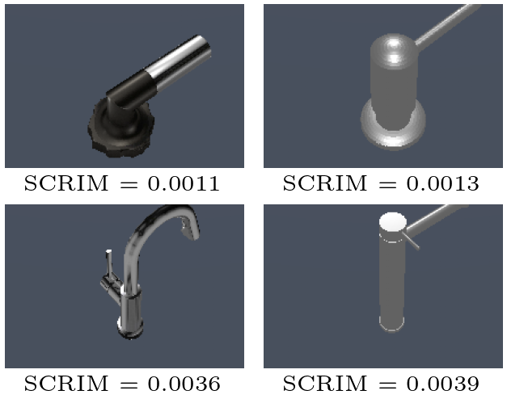

Quantifying State Criticality for Imitation Learning
1Stanford University 2University of Southern California 3Georgia Institute of Technology 4DIENS, Inria Paris, PSL University
* Equal contribution
Imitation learning typically treats every demonstration state as equally important, optimizing a behavior-cloning objective uniformly across the dataset. Yet not all states are created equal: in a small number of critical states, even a slight deviation from the expert action can lead to a failure, while in many other states such errors are recoverable and inconsequential.
We formalize state criticality in imitation learning as the worst-case degradation in downstream value induced by a bounded perturbation of the expert action at a given state. We then propose SCRIM, a practical State CRIticality Measure that estimates this quantity by training an adversarial disturbance policy and a value critic around a fixed imitation policy. SCRIM assigns each demonstration state a score reflecting how vulnerable the task outcome is to small, policy-relevant action errors.
We show that these scores can be used to reweight behavior-cloning losses, improving imitation at consequential states and increasing overall task performance. We further show that SCRIM enables data curation by selecting compact, high-value subsets of demonstrations that preserve performance while substantially reducing the amount of training data. We evaluate SCRIM across various simulated and real-world robotic manipulation tasks, and demonstrate that SCRIM improves policy training, enables efficient data selection, and provides interpretable insights into which moments in a demonstration are most critical for task success.
Average success of SCRIM-weighted behavior cloning vs. standard (uniform) BC across four simulated tasks.
of the demonstrations, picked by SCRIM, beat uniform BC trained on the full dataset (54.0% vs 48.5%).
real-robot rollouts were enough to learn criticality for cube stacking (150 for tape hanging).
We ask a simple question at every demonstration state: if the robot's action were off by a little, how much more likely would the task fail? To answer it, we let an adversary push a trained policy around and learn which nudges hurt.
Train a behavior-cloning policy \(\pi\) as usual, then freeze it. It becomes the base controller.
An adversary adds a small disturbance \(\delta\) to every action, \(|\delta_j| \le \epsilon_j\), and is trained with SAC to make the task fail. A critic \(\bar{Q}\) learns the outcome value of each executed action.
At each demonstration state, compare the critic's value of the expert action with its value after the adversary's worst nudge.
The reward is sparse: \(-1\) for success, \(0\) otherwise, so a higher \(\bar{Q}\) means a worse outcome. The criticality of a state is the worst-case increase in that value from an in-budget perturbation of the expert action \(\pi_E(s)\):
In practice, the learned adversary \(\delta_\pi(s)\) stands in for the inner maximization:
Because the adversary only explores a small neighborhood around the policy's actions, the critic only has to be accurate there, not across the entire action space. And breaking a task is much easier to learn than fixing it, so this takes far less interaction than learning a corrective residual policy.
The scores are standardized and turned into a sampling distribution over demonstration states. We use it in two ways:
Train a fresh BC policy that sees critical states more often, so its capacity goes to the moments that decide the task.
Keep a small subset of the demonstrations, chosen by criticality, and train standard BC on it.
We compare SCRIM to four other ways of scoring states: distance from the gripper to the object, action magnitude, and two value-based measures (the variance of the policy's Q-function over actions, and the gap between the best and average Q-value). All scores are normalized to the same scale and plotted along a single demonstration.
SCRIM is computed with a single critic trained across all demonstrations of a task, so scores are comparable across trajectories and task variations.
On TurnFaucet, which spans ten faucet models, ranking the models by their mean SCRIM gives an intuitive easy-to-hard ordering: broad, forgiving handles score low, while handles that need a precise grasp and turn score high.

Demonstration datasets are dominated by easy, recoverable free-space motion. Uniform BC spreads its capacity across all of it. Weighting training by SCRIM shifts that capacity toward the few states that decide the outcome.
Success rate (%) over 100 rollouts. Every measure is calibrated to the same sharpness, so they differ only in which states they emphasize.
| Weighting | StackCube | TurnFaucet | PegInsertion | Hammer | Average |
|---|---|---|---|---|---|
| Uniform (standard BC) | 68.0 | 39.0 | 26.0 | 61.0 | 48.5 |
| Distance to object | 4.0 | 4.0 | 0.0 | 0.0 | 2.0 |
| Action magnitude | 41.0 | 21.0 | 5.0 | 69.0 | 34.0 |
| Q-function variance | 77.0 | 44.6 | 10.0 | 65.0 | 49.2 |
| Q-value discrepancy | 74.0 | 33.0 | 10.0 | 67.0 | 46.0 |
| SCRIM (ours) | 91.0 | 47.0 | 25.0 | 83.0 | 61.5 |
SCRIM weighting raises average success from 48.5% to 61.5%, improving three of four tasks and matching uniform BC on PegInsertion. The strongest baseline, Q-function variance, lands barely above uniform BC, and the geometric heuristics hurt because they underweight the states that actually matter.
Next we use SCRIM to curate data: sample 25% of the demonstrations according to criticality, then train standard BC on that subset.
Success rate (%) over 100 rollouts. Bold marks the best 25% subset per task.
| Selection | StackCube | TurnFaucet | PegInsertion | Hammer | Average |
|---|---|---|---|---|---|
| Full dataset (reference) | |||||
| Uniform (standard BC) | 68.0 | 39.0 | 26.0 | 61.0 | 48.5 |
| SCRIM-weighted | 91.0 | 47.0 | 25.0 | 83.0 | 61.5 |
| 25% subset | |||||
| Uniform sampling | 73.0 | 41.0 | 14.0 | 60.0 | 47.0 |
| Distance to object | 9.0 | 1.0 | 0.0 | 0.0 | 2.5 |
| Action magnitude | 39.0 | 12.0 | 7.0 | 60.0 | 29.5 |
| Q-function variance | 76.0 | 37.0 | 8.0 | 70.0 | 47.8 |
| Q-value discrepancy | 81.0 | 29.0 | 11.0 | 73.0 | 48.5 |
| SCRIM (ours) | 83.0 | 43.0 | 13.0 | 77.0 | 54.0 |
With a quarter of the data, SCRIM-selected subsets reach 54.0% on average, above uniform BC trained on all the data (48.5%).
A natural alternative is residual RL: learn a corrective policy on top of the frozen BC policy. Our intuition is that actions that break a task are far more abundant than actions that fix it, so the adversarial problem is easier to explore.
Success rate (%) at a matched interaction budget. The last column is how much interaction residual RL needs, relative to the budget, to reach SCRIM.
| Task | Budget | Residual RL | SCRIM-weighted BC | Interaction to match |
|---|---|---|---|---|
| StackCube | 100k | 0.0 | 85.0 | 7.5× |
| TurnFaucet | 200k | 16.0 | 52.0 | 1.5× |
| PegInsertion | 500k | 0.0 | 18.0 | 5.8× |
| Hammer | 100k | 79.0 | 74.0 | — |
On the three ManiSkill tasks, residual RL falls below the base policy it is meant to correct at the same budget. Hammer is the exception: residual RL leads early there, although SCRIM reaches the same peak success within 500k interactions. The two approaches are complementary.
We learned SCRIM on a Franka Panda for two teleoperated tasks: StackCube (stack the red cube on the green cube, 70 demonstrations) and TapeHang (hang a roll of tape on a hook, 100 demonstrations). The base policies are fine-tuned from the \(\pi_{0.5}\) vision-language-action model, and the adversary is trained with SAC directly on the robot. It needed only 50 rollouts for StackCube and 150 for TapeHang.
Because scores are comparable across trajectories, a demonstration's mean SCRIM grades its quality. A high mean marks a success that a small execution error would have turned into a failure; a low mean marks a robust one.
@misc{ciftci2026scrim,
title = {Where Small Mistakes Matter: Quantifying State Criticality for Imitation Learning},
author = {Ciftci, Yusuf Umut and Kang, Joonwon and Sathya, Ajay Suresha and Bansal, Somil},
year = {2026}
}